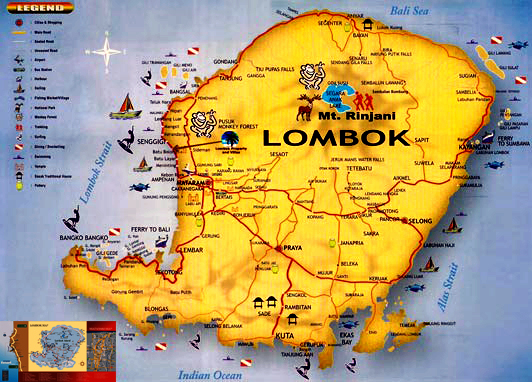

PETA LOMBOK

Pulau Lombok sejak zaman kerajaan Majapahit sudah terkenal. Hal ini terbukti dengan disebutnya dalam buku Negarakertagama yang ditulis oleh Empu Prapanca. Negarakertagama ditemukan juga di Lombok. Legenda masyarakat Sasak menceritakan bahwa pada zaman dahulu kala, kerajaan Mataram Lama di Jawa Tengah dipimpin oleh seorang raja wanita bernama Pramudawardhani yang kawin dengan Rakai Pikatan. Konon sang Permaisuri adalah seorang ahli pemerintahan, sedangkan sang suami ahli peperangan. Kekuasaannya ke barat sampai ke Pulau Sumatra, ke timur sampai ke Pulau Flores. Ketika itulah banyak rakyat Mataram pergi berlayar ke arah timur melalui Laut Jawa menggunakan perahu bercadik.
Mereka lurus ke timur tersebut. Selanjutnya, Lomboq kini tidak hanya menjadi nama pelabuhan tempat perahu itu mendarat, tetapi juga menjadi nama pulau Lomboq yang kemudian berubah menjadi Lombok. Mereka berlayar menggunakan perahu bercadik yang disebut “sak-sak”, dan jadilah mereka dinamakan orang Sak-Sak Yang berarti orang yang datang menggunakan perahu. Kemudian, mereka membaur dengan penduduk asli. Pada waktu itu, di Pulau Lombok telah ada kerajaan yang disebut kerajaan Kedarao (mungkin sekarang Sembalun dan Sambelia).
Mereka kemudian mendirikan kerajaan Lombok yang berpusat di Labuhan Lombok sekarang. Kerajaan Lombok menjadi besar, berkembang dalam lima abad, hingga dikenal di seluruh Nusantara, sebagai pelabuhan yang dikunjungi oleh para pedagang dari Tuban, Gresik, Makasar, Banjarmasin, Ternate, Tidore, bahkan Malaka. Jika datang ke Lombok, orang Malaka membeli beras, tarum, dan kayu sepang. .